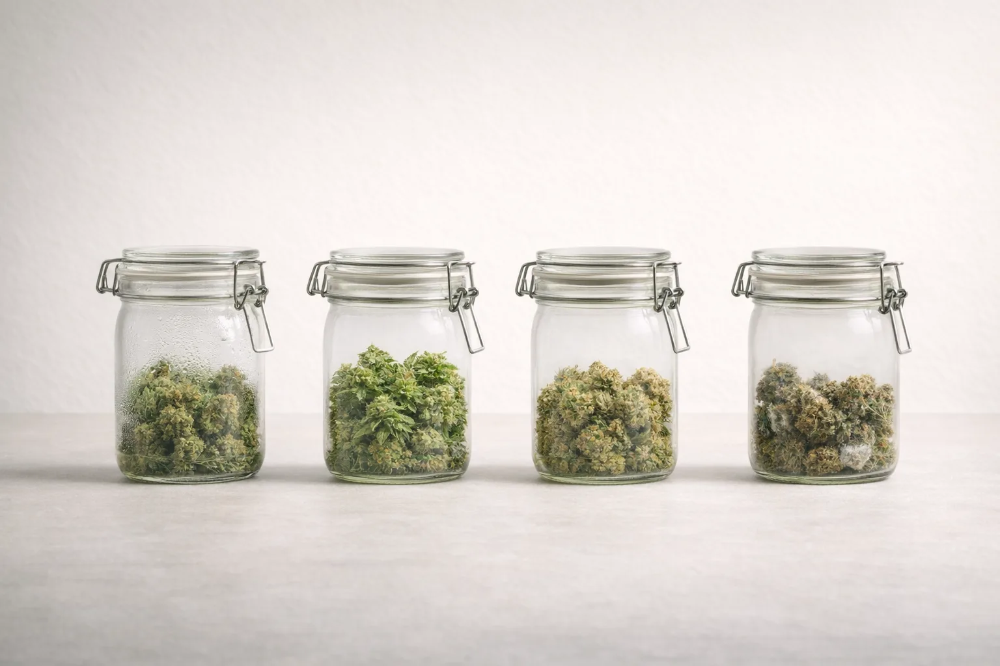

Too much interior moisture forces the cure into emergency mode instead of slow refinement.
Curing guide
Curing cannabis mistakes usually start when jar moisture gets misread.
Common curing mistakes include jarring too early, burping without paying attention to actual moisture behavior, letting buds overdry after the move to jars, and ignoring warning signs like humidity spikes or a persistent grassy smell.
A cure should feel like refinement. If the definition itself still feels fuzzy, start with what is curing first. If the jar keeps demanding constant attention, something earlier in the process probably drifted.
Biggest cause
Starting cure with flower that was not truly ready for jars.
Common confusion
Burping often without understanding what the jar is actually telling you.
Best habit
Read the moisture, smell, and feel of the jar as one system.
Core mistakes
Most curing problems are just the same few errors wearing different clothes.
Opening jars on a ritual schedule without checking how the flower is actually behaving can miss the real issue.
Too much lid time or too much caution can leave the cure flatter and more brittle than it should be.
Sharp moisture rebounds, musty notes, or a lingering grassy smell all deserve a real response.
What a cure is
The cure is a controlled settling process, not a ritual for its own sake.
Once flower is dry enough for jars, curing helps remaining moisture equalize more gently while aroma and smoke quality continue to develop. That only works if the moisture level entering the jar is already in a sane range.
What throws it off
The jar goes sideways when the flower enters unstable or gets handled without context.
Too wet, too dry, or opened too aggressively, the jar stops functioning like a calm environment and starts behaving like a problem that demands too much attention.
Common jar trouble
The jar usually gets loud in a few recognizable ways.
- Wet rebound: buds feel noticeably damper after a short seal.
- Persistent grassy smell: the cure never really settles into a cleaner aroma.
- Musty or off smell: the jar is warning you about a real moisture problem, not just personality.
- Too-dry drift: constant lid time keeps shaving moisture off until the flower starts feeling flat.
What stable looks like
A stable cure gets quieter, cleaner, and less needy over time.
The jar should stop surprising you. Moisture stops rebounding dramatically, aroma gets less grassy and more settled, and handling gets lighter because the flower is no longer asking for daily intervention. A cure should feel like refinement, not active conflict management.

Moisture
Watch the rebound
If buds suddenly feel wetter after sealing, the cure started too early or the moisture is evening out more aggressively than expected.
Smell
Trust the nose
A clean cure should not smell swampy or sharply off. Grassy notes can happen, but persistent funk deserves respect.
Pace
Burp with purpose
The lid is a moisture-management tool, not something you open just because a schedule told you to.
Jar trouble chart
If the jar is acting up, respond to the pattern instead of improvising a new ritual.
| What you notice | What it usually means | Better move |
|---|---|---|
| Buds feel wetter after sealing | The flower likely entered cure too early or is still equalizing too aggressively. | Step back and reassess the handoff with the jars-readiness guide instead of burping on autopilot. |
| Grassy smell that does not settle | The cure never really got into a stable rhythm, often because the dry or jar timing was off. | Read the moisture behavior honestly and stop pretending time alone will fix a bad entry into cure. |
| Musty or swampy odor | The jar is carrying more moisture risk than the flower can quietly manage. | Treat it like a real warning sign and reassess immediately instead of romanticizing the smell. |
| Buds getting brittle in cure | Too much lid time, too much handling, or a handoff that was already a little too dry. | Back off the jar routine and let the flower settle instead of drying it out further in the name of caution. |
What beginners get wrong
The cure usually slips when people try to force calm instead of building it.
- Starting cure before the dry is actually complete enough for jars.
- Burping constantly without reading whether the buds are stabilizing or just drying out further.
- Ignoring smell changes because the outside of the buds still looks fine.
- Trying to rescue every jar problem with more opening and more handling instead of stepping back and reassessing moisture.
What not to do when nervous
More burping, more touching, and more jar drama are rarely the cure for cure anxiety.
- Do not open the jar constantly just because the clock says it has been a while.
- Do not overhandle the buds while trying to convince yourself they feel different every hour.
- Do not treat every smell change like a mystery that requires a new ceremony.
- Do not keep stacking little fixes when the real problem may be that the flower was jarred too early.
When to step back
If the jar keeps getting louder, the answer may live earlier in the finish path.
This is the part growers resist. If moisture keeps spiking, smell keeps going sideways, or the cure never settles, it may not be a burping problem at all. It may be a drying or handoff problem. Go back through common drying mistakes and the full cure guide before turning the jar into a daily experiment.
What a good cure feels like
The process should settle down, not get louder.
A cure that is going well becomes less dramatic over time. The flower feels more balanced, the aroma gets cleaner, and the jar stops surprising you. That quieting effect is a good sign. If the jar keeps getting louder, it is not asking for ceremony. It is asking for a better read.